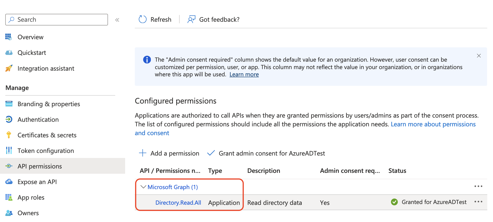
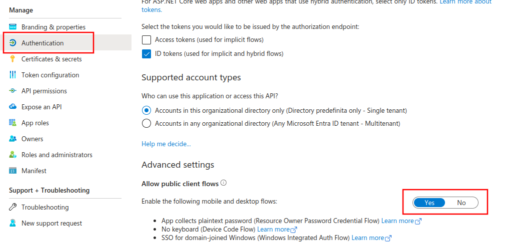
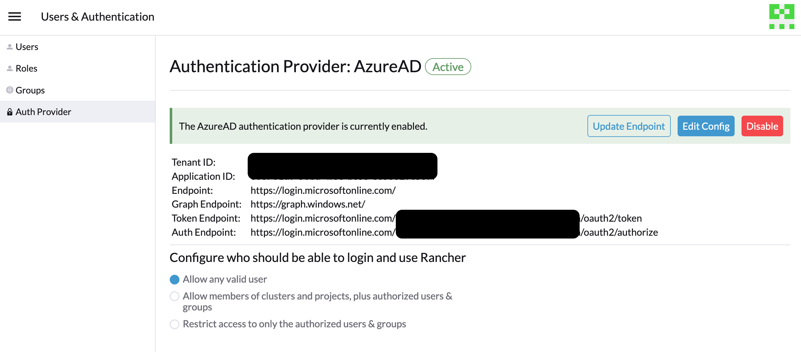

Configurer Azure AD
API Microsoft Graph
L’API Microsoft Graph est désormais le flux par lequel vous allez configurer Azure AD. Les sections ci-dessous aideront à la fois les nouveaux utilisateurs à configurer Azure AD avec une nouvelle instance et les propriétaires d’applications Azure existants à migrer vers le nouveau flux.
Le flux de l’API Microsoft Graph dans Rancher évolue constamment. Nous vous recommandons d’utiliser la dernière version intégrant le correctif de 2.7, car elle est encore en développement actif et continuera de recevoir de nouvelles fonctionnalités et améliorations.
Configuration des nouveaux utilisateurs
Si vous avez une instance d’Active Directory (AD) hébergée dans Azure, vous pouvez configurer Rancher pour permettre à vos utilisateurs de se connecter en utilisant leurs comptes AD. La configuration de l’authentification externe Azure AD nécessite que vous effectuiez des configurations à la fois dans Azure et dans Rancher.
|
Aperçu de la Configuration d’Azure Active Directory
Configurer Rancher pour permettre à vos utilisateurs de s’authentifier avec leurs comptes Azure AD implique plusieurs procédures. Examinez l’aperçu ci-dessous avant de commencer.
|
Avant de commencer, ouvrez deux onglets de navigateur : un pour Rancher et un pour le portail Azure. Cela facilitera la copie et le collage des valeurs de configuration du portail vers Rancher. |
1. Enregistrer Rancher avec Azure
Avant d’activer Azure AD dans Rancher, vous devez enregistrer Rancher avec Azure.
-
Connectez-vous à Microsoft Azure en tant qu’utilisateur administratif. La configuration dans les étapes futures nécessite des droits d’accès administratifs.
-
Utilisez la recherche pour ouvrir le service Enregistrements d’applications.
-
Cliquez sur Nouvelle inscription et remplissez le formulaire.

-
Entrez un Nom (quelque chose comme
Rancher). -
Dans Types de comptes pris en charge, sélectionnez "Comptes uniquement dans ce répertoire organisationnel (AzureADTest uniquement - Locataire unique)" Cela correspond aux options d’inscription d’application héritées.
Dans le portail Azure mis à jour, les URI de redirection sont synonymes d’URL de réponse. Pour utiliser Azure AD avec Rancher, vous devez mettre Rancher sur liste blanche avec Azure (précédemment fait via les URL de réponse). Par conséquent, vous devez vous assurer de remplir l’URI de redirection avec l’URL de votre serveur Rancher, en incluant le chemin de vérification comme indiqué ci-dessous.
-
Dans la section URI de redirection, assurez-vous que Web est sélectionné dans le menu déroulant et entrez l’URL de votre serveur Rancher dans la zone de texte à côté du menu déroulant. Cette URL de serveur Rancher doit être complétée par le chemin de vérification :
<MY_RANCHER_URL>/verify-auth-azure.Vous pouvez trouver votre URI de redirection Azure personnalisée (URL de réponse) dans Rancher sur la page d’authentification Azure AD (Vue globale > Authentification > Web).
-
Cliquez sur Enregistrer.
-
|
Il peut falloir jusqu’à cinq minutes pour que ce changement prenne effet, donc ne soyez pas alarmé si vous ne pouvez pas vous authentifier immédiatement après la configuration d’Azure AD. |
2. Créez un nouveau secret client
Depuis le portail Azure, créez un secret client. Rancher utilisera cette clé pour s’authentifier auprès d’Azure AD.
-
Utilisez la recherche pour ouvrir les services Enregistrements d’applications. Puis ouvrez l’entrée pour Rancher que vous avez créée dans la dernière procédure.

-
Dans le panneau de navigation, cliquez sur Certificats et secrets.
-
Cliquez sur Nouveau secret client.

-
Entrez une Description (quelque chose comme
Rancher). -
Sélectionnez la durée parmi les options sous Expire. Ce menu déroulant définit la date d’expiration de la clé. Des durées plus courtes sont plus sécurisées, mais nécessitent de créer une nouvelle clé plus fréquemment. Notez que les utilisateurs ne pourront pas se connecter à Rancher s’il détecte que le secret de l’application a expiré. Pour éviter ce problème, faites tourner le secret dans Azure et mettez-le à jour dans Rancher avant qu’il n’expire.
-
Cliquez sur Ajouter (vous n’avez pas besoin d’entrer de valeur--, elle se remplira automatiquement après avoir enregistré).
-
Vous saisirez cette clé dans l’interface utilisateur de Rancher plus tard comme votre Secret d’application. Puisque vous ne pourrez pas accéder à la valeur de la clé à nouveau dans l’interface utilisateur d’Azure, gardez cette fenêtre ouverte pour le reste du processus de configuration.
3. Définir les autorisations requises pour Rancher
Ensuite, définissez les autorisations API pour Rancher dans Azure.
|
Assurez-vous de définir les autorisations d’application, et non les autorisations déléguées. Sinon, vous ne pourrez pas vous connecter à Azure AD. |
-
Dans le panneau de navigation, sélectionnez Autorisations API.
-
Cliquez sur Ajouter une autorisation.
-
Dans l’API Microsoft Graph, sélectionnez les Autorisations d’application suivantes :
Directory.Read.All
-
Retournez à Autorisations API dans la barre de navigation. À partir de là, cliquez sur Accorder le consentement administrateur. Puis cliquez sur Oui. Les autorisations de l’application devraient ressembler à ce qui suit :

|
Rancher ne valide pas les autorisations que vous accordez à l’application dans Azure. Vous êtes libre d’essayer toutes les autorisations que vous souhaitez, tant qu’elles permettent à Rancher de fonctionner avec les utilisateurs et groupes AD. Plus précisément, Rancher a besoin d’autorisations qui permettent les actions suivantes :
Rancher effectue ces actions soit pour connecter un utilisateur, soit pour exécuter une recherche utilisateur/groupe. Gardez à l’esprit que les autorisations doivent être de type Voici quelques exemples de combinaisons d’autorisations qui satisfont les besoins de Rancher :
|
4. Autoriser les flux de clients publics
Pour vous connecter depuis Rancher CLI, vous devez autoriser les flux de clients publics :
-
Dans le menu de navigation à gauche, sélectionnez Authentification.
-
Sous Paramètres avancés, sélectionnez Oui sur le commutateur à côté de Autoriser les flux de clients publics.

5. Copier les données de l’application Azure

-
Obtenez votre ID de locataire Rancher.
-
Utilisez la recherche pour ouvrir Enregistrements d’applications.
-
Trouvez l’entrée que vous avez créée pour Rancher.
-
Copiez le ID de répertoire et collez-le dans Rancher comme votre ID de locataire.
-
-
Obtenez votre ID d’application (client) Rancher.
-
Si vous n’y êtes pas déjà, utilisez la recherche pour ouvrir Enregistrements d’applications.
-
Dans Vue d’ensemble, trouvez l’entrée que vous avez créée pour Rancher.
-
Copiez le ID d’application (client) et collez-le dans Rancher comme votre ID d’application.
-
-
Dans la plupart des cas, vos options de point de terminaison seront soit Standard soit Chine. Pour l’une de ces options, vous devez uniquement entrer le ID de locataire, ID d’application et Secret d’application.

Pour les points de terminaison personnalisés :
|
Les points de terminaison personnalisés ne sont pas testés ni entièrement pris en charge par Rancher. |
Vous devrez également entrer manuellement les points de terminaison Graph, Token et Auth.
-
Depuis Enregistrements d’applications, cliquez sur Points de terminaison :

-
Les points de terminaison suivants seront vos valeurs de point de terminaison Rancher. Assurez-vous d’utiliser la version v1 de ces points de terminaison :
-
Point de terminaison de l’API Microsoft Graph (Point de terminaison Graph)
-
Point de terminaison de jeton OAuth 2.0 (v1) (Point de terminaison de jeton)
-
Point de terminaison d’autorisation OAuth 2.0 (v1) (Point de terminaison d’autorisation)
-
6. Configurez Azure AD dans Rancher
Pour compléter la configuration, entrez les informations concernant votre instance AD dans l’interface utilisateur de Rancher.
-
Connectez-vous à Rancher.
-
Dans le coin supérieur gauche, cliquez sur ☰ > Utilisateurs et authentification.
-
Dans le menu de navigation à gauche, cliquez sur Fournisseur d’authentification.
-
Click AzureAD.
-
Complétez le formulaire Configurer le compte Azure AD en utilisant les informations que vous avez copiées lors de la réalisation de Copier les données de l’application Azure.
Le compte Azure AD se verra accorder des privilèges d’administrateur, car ses détails seront mappés au compte principal local de Rancher. Assurez-vous que ce niveau de privilège est approprié avant de continuer.
Pour les points de terminaison Standard ou Chine :
Le tableau suivant associe les valeurs que vous avez copiées dans le portail Azure aux champs de Rancher :
Champ Rancher Azure Value ID de locataire
ID du répertoire
ID d’application
ID d’application
Secret de l’application
Valeur de clé
Noeud d’extrémité
https://login.microsoftonline.com/
Pour les points de terminaison personnalisés :
Le tableau suivant associe vos valeurs de configuration personnalisées aux champs de Rancher :
Champ Rancher Azure Value Point de terminaison Graph
Point de terminaison de l’API Microsoft Graph
Point de terminaison de jeton
Point de terminaison de jeton OAuth 2.0
Point de terminaison d’authentification
Point de terminaison d’autorisation OAuth 2.0
IMPORTANT : Lors de la saisie du point de terminaison Graph dans une configuration personnalisée, retirez l’ID de locataire de l’URL :
https://graph.microsoft.com/abb5adde-bee8-4821-8b03-e63efdc7701c -
(Optionnel) Dans Rancher v2.9.0 et versions ultérieures, vous pouvez filtrer les appartenances aux groupes des utilisateurs dans Azure AD pour réduire la quantité de données de journal générées. Voir les étapes 4—5 de Filtrage des utilisateurs par appartenance à des groupes d’authentification Azure AD pour des instructions complètes.
-
Cliquez sur Activer.
Résultat : L’authentification Azure Active Directory est configurée.
(Optionnel) Configurer l’authentification avec plusieurs domaines Rancher
Si vous avez plusieurs domaines Rancher, il n’est pas possible de configurer plusieurs URI de redirection via l’interface utilisateur de Rancher. Le fichier de configuration Azure AD, azuread, n’autorise par défaut qu’une seule URI de redirection. Vous devez modifier manuellement azuread pour définir l’URI de redirection selon les besoins pour d’autres domaines. Si vous ne modifiez pas manuellement azuread, alors après une tentative de connexion réussie à un domaine, Rancher redirige automatiquement l’utilisateur vers la valeur URI de redirection que vous avez définie lors de l’enregistrement de l’application dans Étape 1. Enregistrez Rancher avec Azure.
Migration de l’API Graph Azure AD vers l’API Graph Microsoft
Étant donné que l’API Graph Azure AD a cessé d’être prise en charge et doit être retirée en juin 2023, les administrateurs doivent mettre à jour leur application Azure AD pour utiliser l’API Graph Microsoft dans Rancher. Cela doit être fait bien avant le retrait du point de terminaison. Si Rancher est toujours configuré pour utiliser l’API Graph Azure AD lorsqu’elle est retirée, les utilisateurs peuvent ne pas être en mesure de se connecter à Rancher en utilisant Azure AD.
Mise à jour des points de terminaison dans l’interface utilisateur de Rancher.
|
Les administrateurs doivent créer une sauvegarde de Rancher avant de s’engager dans la migration des points de terminaison décrite ci-dessous. |
-
Mettre à jour les autorisations de votre enregistrement d’application Azure AD. C’est essentiel.
-
Connectez-vous à Rancher.
-
Dans la page d’accueil de l’interface utilisateur Rancher, notez la bannière en haut de l’écran qui conseille aux utilisateurs de mettre à jour leur authentification Azure AD. Cliquez sur le lien fourni pour ce faire.

-
Pour finaliser le passage à la nouvelle API Microsoft Graph, cliquez sur Mise à jour du point de terminaison.
Assurez-vous que votre application Azure dispose d’un nouveau jeu d’autorisations avant de commencer la mise à jour. 
-
Lorsque vous recevez le message d’avertissement contextuel, cliquez sur Mettre à jour.

-
Référez-vous aux tableaux ci-dessous pour la liste complète des changements de points de terminaison que Rancher effectue. Les administrateurs n’ont pas besoin de le faire manuellement.
Environnements isolés physiquement
Dans les environnements isolés physiquement, les administrateurs doivent s’assurer que leurs points de terminaison sont sur liste blanche (voir la note sur Étape 3.2 d’enregistrement de Rancher avec Azure) car l’URL du point de terminaison Graph change.
Retour en arrière sur la migration
Si vous devez revenir sur votre migration, veuillez noter ce qui suit :
-
Les administrateurs sont encouragés à utiliser le processus de restauration approprié s’ils souhaitent revenir en arrière. Veuillez consulter docs de sauvegarde, docs de restauration et exemples pour référence.
-
Les propriétaires d’application Azure qui souhaitent faire tourner le secret d’application devront également le faire dans Rancher, car Rancher ne met pas à jour automatiquement le secret d’application lorsqu’il est modifié dans Azure. Dans Rancher, notez qu’il est stocké dans un secret Kubernetes appelé
azureadconfig-applicationsecretqui se trouve dans l’espace de nomscattle-global-data.
|
Si vous mettez à niveau vers Rancher v2.7.0+ avec une configuration Azure AD existante, et choisissez de désactiver le fournisseur d’authentification, vous ne pourrez pas restaurer la configuration précédente. Vous ne pourrez également pas configurer Azure AD en utilisant l’ancien flux. Vous devrez vous réinscrire avec le nouveau flux d’authentification. Puisque Rancher utilise désormais l’API Graph, les utilisateurs doivent configurer les permissions appropriées dans le portail Azure. |
Global :
| Champ Rancher | Points de terminaison dont la prise en charge est cessée |
|---|---|
Point de terminaison d’authentification |
https://login.microsoftonline.com/{tenantID}/oauth2/authorize |
Noeud d’extrémité |
https://login.microsoftonline.com/ |
Point de terminaison Graph |
https://graph.windows.net/ |
Point de terminaison de jeton |
https://login.microsoftonline.com/{tenantID}/oauth2/token |
| Champ Rancher | Nouveaux points de terminaison |
|---|---|
Point de terminaison d’authentification |
https://login.microsoftonline.com/{tenantID}/oauth2/v2.0/authorize |
Noeud d’extrémité |
https://login.microsoftonline.com/ |
Point de terminaison Graph |
https://graph.microsoft.com |
Point de terminaison de jeton |
https://login.microsoftonline.com/{tenantID}/oauth2/v2.0/token |
Chine :
| Champ Rancher | Points de terminaison dont la prise en charge a cessé |
|---|---|
Point de terminaison d’authentification |
https://login.chinacloudapi.cn/{tenantID}/oauth2/authorize |
Noeud d’extrémité |
https://login.chinacloudapi.cn/ |
Point de terminaison Graph |
https://graph.chinacloudapi.cn/ |
Point de terminaison de jeton |
https://login.chinacloudapi.cn/{tenantID}/oauth2/token |
| Champ Rancher | Nouveaux points de terminaison |
|---|---|
Point de terminaison d’authentification |
https://login.partner.microsoftonline.cn/{tenantID}/oauth2/v2.0/authorize |
Noeud d’extrémité |
https://login.partner.microsoftonline.cn/ |
Point de terminaison Graph |
https://microsoftgraph.chinacloudapi.cn |
Point de terminaison de jeton |
https://login.partner.microsoftonline.cn/{tenantID}/oauth2/v2.0/token |
Filtrage des utilisateurs par appartenance à des groupes d’authentification Azure AD
Dans Rancher v2.9.0 et versions ultérieures, vous pouvez filtrer les appartenances aux groupes des utilisateurs d’Azure AD pour réduire la quantité de données de journal générées. Si vous n’avez pas filtré les appartenances aux groupes lors de la configuration initiale, vous pouvez toujours ajouter des filtres à une configuration Azure AD existante.
|
Exclure une appartenance à un groupe d’utilisateurs affecte plus que la simple journalisation. Puisque le filtre empêche Rancher de voir que l’utilisateur appartient à un groupe exclu, il ne voit également aucune permission de ce groupe. Cela signifie qu’exclure un groupe du filtre peut avoir pour effet secondaire de refuser aux utilisateurs des permissions qu’ils devraient avoir. |
-
Dans Rancher, dans le coin supérieur gauche, cliquez sur ☰ > Utilisateurs et authentification.
-
Dans le menu de navigation à gauche, cliquez sur Fournisseur d’authentification.
-
Click AzureAD.
-
Cochez la case à côté de Limiter les utilisateurs par appartenance à un groupe.
-
Entrez une clause de filtre OData dans le champ Filtre d’appartenance au groupe. Par exemple, si vous souhaitez limiter la journalisation aux appartenances à des groupes dont le nom commence par
test, cochez la case et entrezstartswith(displayName,'test').

API Graph Azure AD obsolète
|
Revendications de rôles Azure AD
Rancher prend en charge la revendication de rôles fournie par le token du fournisseur OIDC d’Azure AD, permettant une délégation complète du contrôle d’accès basé sur les rôles (RBAC) à Azure AD. Auparavant, Rancher ne traitait que la revendication Groups pour déterminer l’appartenance d’un utilisateur à group. Cette amélioration étend la logique pour inclure également la revendication de rôles dans le token OIDC de l’utilisateur.
En incluant la revendication de rôles, les administrateurs peuvent :
-
Définir des rôles spécifiques de haut niveau dans Azure AD.
-
Lier ces rôles Azure AD directement aux ProjectRoles ou ClusterRoles dans Rancher.
-
Centraliser et déléguer entièrement les décisions de contrôle d’accès au fournisseur OIDC externe.
Par exemple, considérez la structure de rôle suivante dans Azure AD :
| Nom du rôle Azure AD | Membres |
|---|---|
project-alpha-dev |
Utilisateur A, Utilisateur C |
L’utilisateur A se connecte à Rancher via Azure AD. Le token OIDC inclut une revendication de rôles, [project-alpha-dev]. La logique de Rancher traite le token et la liste interne de groups/rôles pour l’utilisateur A qui inclut project-alpha-dev. Un administrateur a créé un lien de rôle de projet qui associe le rôle Azure AD project-alpha-dev au rôle de projet Dev Member pour le projet Alpha. L’utilisateur A se voit automatiquement attribuer le rôle Dev Member dans le projet Alpha.